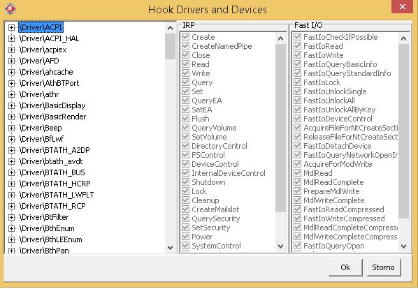
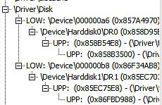

Drivers and devices selectable for monitoring are displayed in a tree structure on the left half of the windows. The right section of the window allows specifying types of IRP and fast I/O operation reported for given drivers and devices. To monitor certain driver and/or device, the user has to right click to the corresponding node and indicate what types of operations should be monitored.

Figure 1: The Select Driver / Device window
Drivers are represented by root nodes, whereas devices form their children. Each driver includes its devices as children of its node. Also, devices that do not belong to the driver but are present within a stack with at least one of its devices are also made children of the driver node. Names of such nodes contain either LOW, or UPP prefix indicating whether they are placed below or above driver's device within the stack.
Figure 2 shows how the disk driver, disk.sys, and its devices are displayed in the tree structure. The driver is named \Driver\disk and owns two devices: \Device\Harddisk0\DR0 and \Device\Harddisk1\DR1. Both are placed in the middle of device stacks – the former one is attached to a device belonging to \Driver\atapi, the latter one lies above a device from \Driver\USBSTOR. The partition manager driver, partmgr.sys, places its devices into both stacks, above the disk ones.

Figure 2: Disk driver, disk.sys, displayed in the tree structure
To monitor a driver or device, the user has to right click on the corresponding node and check one or more of the following options:
Some of the options (AddDevice, Unload, New devices) are specific to driver monitoring. When the user marks them for a device node, the change is propagated to the parent driver.
To monitor particular device, the user has to ensure that its driver is also being monitored. When the user checks the Hooked option for a device, the application attempts to propagate the change to device's driver.
To restrict the monitoring only to certain IRP and/or fast I/O requests, the user may utilize the right area of the window. There is one checkbox for each IRP and fast I/O request type. These checkboxes reflect the monitoring state of the current node and their changes are immediately saved (however, they are propagated to the IRPMon driver after the user presses the Ok button).